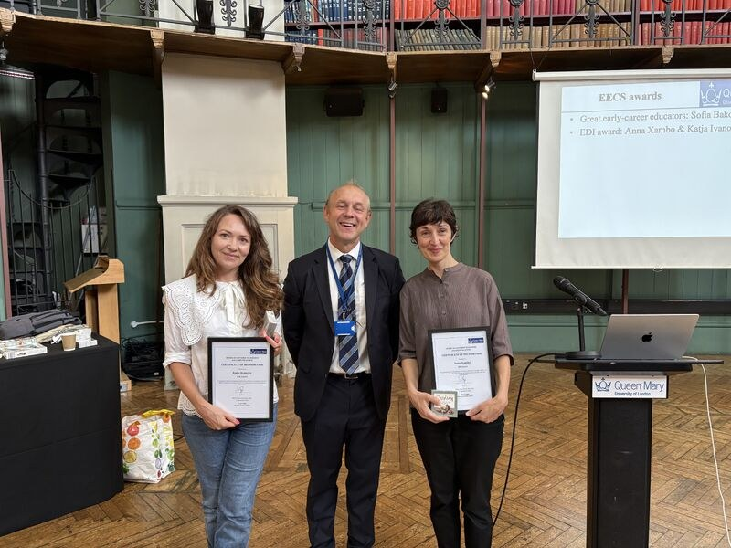
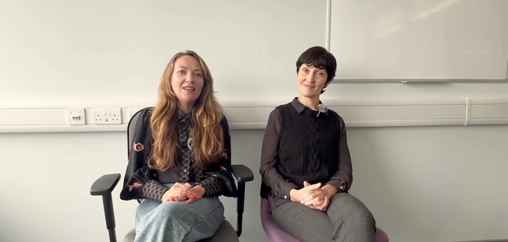
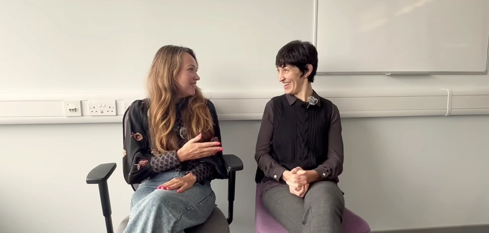
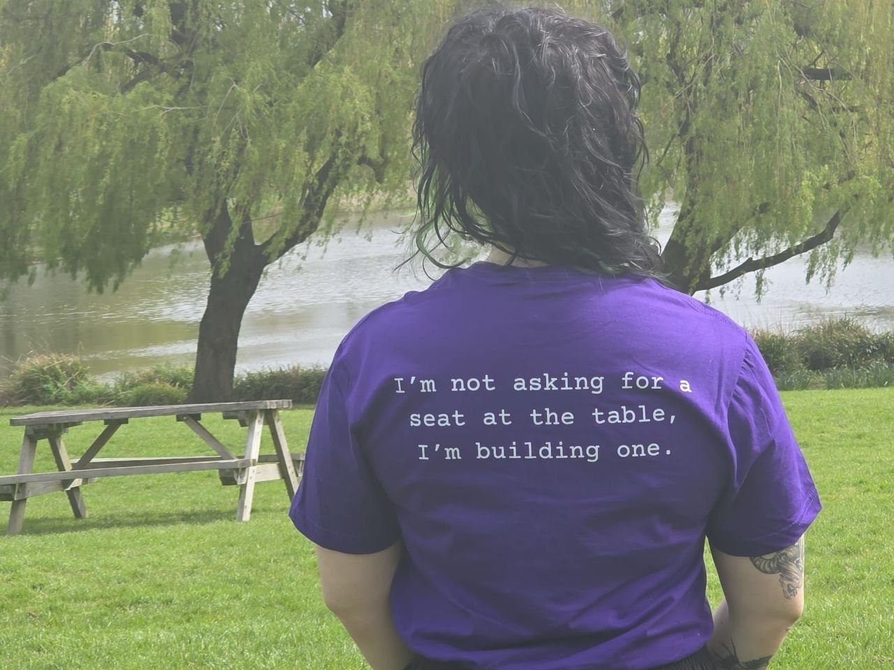
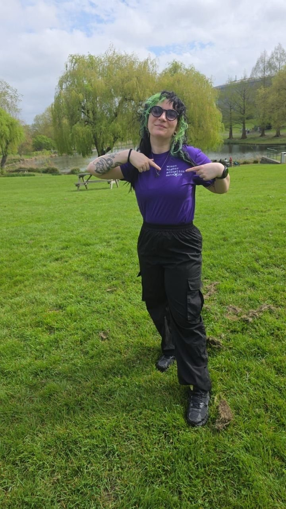

Support
Mentoring and workshops, from grant writing to public engagement.
See our workshops ›WHEN brings together women at every stage of their academic careers to connect, share ideas and support each other.
In the UK, women earn 27.9% of computing degrees and 23.2% in engineering.
HESA data 2024/25, via WISE
They are nearly half of academic staff, but one in three professors, and one in four in STEM.
HESA staff data 2024/25, analysis by Emily Nordmann. STEM: Royal Society analysis of HESA data, 2022/23
WHEN brings these women together.
Mentoring and workshops, from grant writing to public engagement.
See our workshops ›Sharing research, resources and ideas.
Explore resources ›Monthly meetups, where collaborations begin.
Join the next one ›It is rewarding to meet like-minded women, and this network has already led to several collaborations in research and in projects with social impact.
We need to be proactive in creating safe spaces for discussion, and in making visible the often hidden work of women in fields of research where we are a minority.
Free, and open to women working or studying in higher education.
A network built from the bottom up, shaped by the needs of the women who take part in it.
The EECS Women in Higher Education Network (WHEN) builds a community for individuals identifying as women and provides opportunities for exchange among academics at all levels, from PhD students to research assistants, postdoctoral fellows and academics.
The network aims to advance diversity, equity and inclusion by strengthening relationships and the sense of belonging among its members. Balanced gender representation improves working culture and supports a broader range of viewpoints, which leads to more creative ideas and innovation. This is particularly relevant for computer science and engineering, where women are traditionally underrepresented.
We believe that the most open discussions and natural professional collaborations occur with a bottom-up approach. Our activities are shaped by the needs and expectations of our community, and we aim to make events accessible online for women who cannot attend in person.
Building a community also makes it easier to start research collaborations, receive advice from more experienced researchers and discuss difficult questions in a safe space. In the long term, we would like WHEN to become a network of networks across the Faculty of Science and Engineering.
The organisers had contributed to similar groups elsewhere, including Women Robotics at Imperial, Women in Music Tech at Georgia Tech, WoNoMute at NTNU and the University of Oslo, and WiNIME at the NIME conference. These experiences showed the need for safe spaces for discussion and for an open platform where women in research can connect and make their work visible.
With the support of the ERIC Fund, WHEN launched its website, mailing list and Teams group, and organised its first six events, including workshops, talks and social gatherings. Research assistant María José Barrera-Chávez ran a survey among members, which identified three needs: support, learning and socialising.
Funded by the second round of the ERIC Fund, WHEN started organising one event per month. Research assistant Antonella Torrisi joined to support the announcement and production of events and outreach. Together with Byte Queens, we organised a networking event for 50 women students, and the WHEN model was adopted by the School of Biological and Behavioural Sciences, with SBBS WHEN led by Laura Crucianelli.
Supported by the ERICA Fund, we continue our monthly programme and plan further support for early-career academics.

WHEN has received an Equality, Diversity and Inclusion (EDI) award on behalf of the School of Electronic Engineering and Computer Science.
With thanks to our Head of School, Steve Uhlig, and to the EECS Equalities Committee led by Charalampos Saitis and Habiba Akter.WHEN has been featured as a case study in the Gender Equality Directory of Good Practice and Research.


WHEN was interviewed by Aurélie Leroy for EECS News, "Empowering women in tech at Queen Mary, the story behind WHEN", following Ada Lovelace Day.
All our activities are free to attend. Unless stated otherwise, they are open to women working or studying in higher education.
Click an event to read more and register.
News, interviews and stories from the WHEN community and the women leading the way in STEM.
WHEN is run by staff and students across Queen Mary.
Programmes, communities and tools that can support women in academia and in tech.
WHEN Resource Hub
Fellowships and funding with their deadlines, help with childcare and caring costs, part-time work, housing, wellbeing and inclusion resources, checked every week.
Dates in the year when we celebrate women in science, technology, engineering and mathematics. Open each day to read more.
This collage is the header of our Bluesky profile. Open it to learn more about our pioneers.
Computer scientist and US Navy rear admiral. She developed one of the first compilers and helped create COBOL, a programming language that reads close to English. She also helped popularise the word "debugging". She believed that people should be able to talk to computers in words, not only in numbers. This idea made programming open to many more people and shaped the languages we use today.
Computer scientist who led the MIT team that wrote the onboard flight software for the Apollo missions. During the Apollo 11 landing in 1969, her software handled an overload of alarms and let the crew land safely. She received the Presidential Medal of Freedom in 2016. She helped establish software engineering as a discipline and showed that software is as critical as hardware.
Pharmacologist who developed drugs for leukaemia, gout, organ transplants and viral infections, including the antiviral aciclovir. She shared the 1988 Nobel Prize in Physiology or Medicine and in 1991 became the first woman in the US National Inventors Hall of Fame. She reached the top of science without completing a PhD, and her way of designing drugs from how cells work changed how medicines are developed.
Actress and inventor. In 1942 she patented, with George Antheil, a frequency-hopping system to protect radio signals from interference. Ideas of this kind are now part of wireless technologies such as Wi-Fi, Bluetooth and GPS. For decades she was known only as a film star. Her work as an inventor was recognised late in her life, and she entered the National Inventors Hall of Fame in 2014.
NASA mathematician who calculated the trajectories for the first American human spaceflights. Before his orbit in 1962, John Glenn asked for her to check the computer's numbers by hand. She also worked on Apollo 11 and received the Presidential Medal of Freedom in 2015. She was one of the African American women "human computers" at NASA, whose story was told in Hidden Figures, the film we screened with WHEN in 2025.
Mathematician and one of the six original programmers of ENIAC, one of the first general-purpose electronic computers. During the Second World War she calculated artillery trajectories by hand. Together with the other ENIAC programmers, she invented many programming techniques without any manual, yet their work was not credited for decades. In 1997 she and her colleagues entered the Women in Technology International Hall of Fame.
Do you know a resource that should be here? Write to us at eecs-when@qmlists.qmul.ac.uk.
There are many ways to be part of WHEN, from coming to an event to helping us organise the next one.
e.ivanova@qmul.ac.uka.xambosedo@qmul.ac.ukeecs-when@qmlists.qmul.ac.ukThe logo reflects the values of diversity, equality and community. Its colour is a dark violet, #46296E, from the International Women's Day colour palette. It uses Compagnon, a monospaced font by the Velvetyne Type Foundry listed in the Libre Fonts by Womxn directory, and has been featured on Velvetyne's "in use" page. The network icon is adapted from "Network" by Three Six Five, Noun Project (CC BY 3.0).
Our purple T-shirt carries the WHEN logo on the front and, on the back, the words of our network.
I'm not asking for a seat at the table, I'm building one.


In the picture: Sara Cardiale, sound engineer, PhD researcher at C4DM and member of the WHEN team.
Sound design and animation by Nelly Garcia. The sound embodies the values at the heart of WHEN: diversity, innovation, collaboration and resilience. Every note reflects our commitment to being supportive, empowering and future-focused as we support women in higher education.